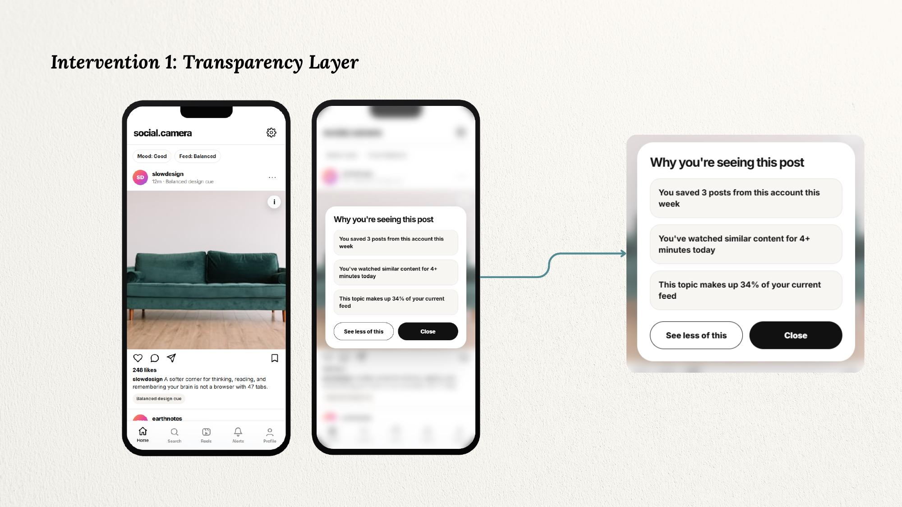
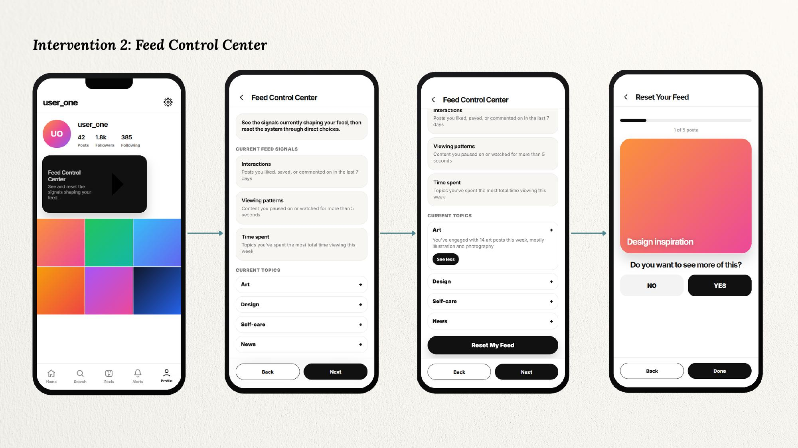
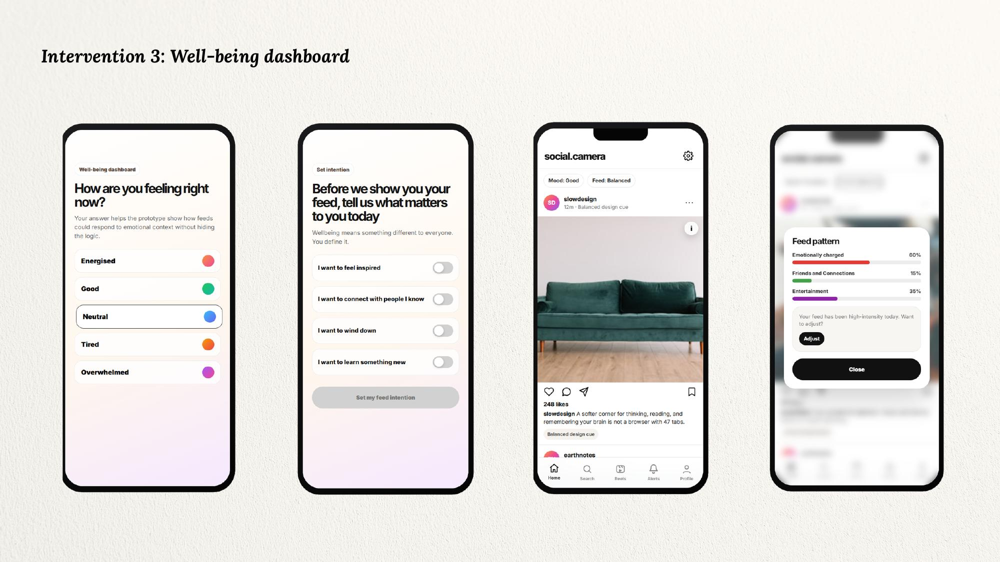

The problem
That's not a willpower problem. That's a design problem.
Knowing a system exists is not the same as having power over it. One respondent put it more plainly than any stat could:
That gap isn't an education problem. It's a design problem, and it needs structural redesign — not another awareness campaign.
The research
I ran 54 surveys and 10 semi-structured interviews, 30–40 minutes each, with participants ranging from casual users to active content creators, aged 18 to 65, across multiple countries and platforms. The questions covered algorithmic awareness, feed satisfaction, posting behavior, emotional well-being, and platform trust.
I grounded the diagnosis in four frameworks:
What I found
Three specific gaps, not just a vague sense that people feel bad about algorithms:
None of the existing fixes touch any of this. Banning a platform just moves the behavior elsewhere. Screen-time reminders ask people to resist a system engineered specifically to prevent resistance. And education doesn't help when the awareness is already there — 90% of people already know. The gap was never about knowledge.
What I designed
Three interventions, prototyped as a standalone concept called social.camera — including a working build you can actually click through further down — plus one intervention that doesn't live in an app at all.
Transparency Layer
Instead of a vague, buried disclaimer, an explanation panel accessible from every post that names the actual signals driving it — you saved 3 posts from this account this week, this topic makes up 34% of your feed — with a real action attached, not just an explanation.

Feed Control Center
A control panel reachable in one tap from a profile, not five taps deep in settings. It shows exactly what's currently shaping the feed — interactions, viewing patterns, time spent — lets someone adjust individual topics, and offers a full reset that asks, post by post: do you want to see more of this?

Well-being Dashboard
Before showing a feed, the app asks how someone's actually feeling and what they want from their time today. Afterward, it surfaces a "feed pattern" report — your feed ran 60% emotionally charged this week — because platforms already have this data about you. They just never show it back.

See it working
These weren't just static mockups — I built a working prototype. Set a mood in the well-being check-in, tap into a post to see the transparency panel, or walk through the Feed Control Center's reset flow yourself.
Scroll within the frame if it's cut off — this is a full working build, not a video.
Policy intervention
None of this works if it stays voluntary. Meta lost an estimated $10 billion in revenue the moment Apple gave users one real privacy choice — proof the business model itself resists transparency by default. 78% of respondents said they'd switch platforms if these features existed. The EU has already written two binding laws, GDPR and the DSA, establishing a right to exactly this. The fix isn't just better design. It's making transparency, control, and emotional visibility mandatory conditions of operating at scale.
What this doesn't claim
The sample skews toward India, the US, and people already reflective enough about their social media use to sit through a 40-minute interview about it. These interventions redesign the interface — they don't touch the business model underneath it, which is a different, harder problem. Informal testing suggested people responded well, but a structured usability study is still future work. And without policy backing them, they remain proposals, not requirements.
Why it matters
This is the other half of an argument that runs through most of my work. MONUM is about getting people to actually pay attention to something worth their attention. This is about what happens after their attention is captured — and what design owes people once it has it.